3 Part 2: Google auth
About half way through the semester we start using Node-based development environments. This page covers setup for that using Codespaces.
3.1 Github Codespaces
In the last few years, virtual computing has become so prevalent and cheap that we may not need to do this kind of development locally. Github has a virtual machine (VM) called Codespaces that is baked right into your repo.
Using Codespaces saves us from some computer setup because the virtual computer recognizes and installs most of what we need.
We handle to how to start a new codespace from a repo in Intro to Coding for Journalists.
3.2 Google Cloud services
When we start building projects using the icj-project-rig there is a feature that allows non-coders to store and edit data in Google Docs and Google Sheets, but allow us to then “fetch” that content as data into our project.
To do this, we access to Google Cloud’s application programming interfaces, or APIs. Having these will allow us to use our code to talk to Google Sheets and Google Docs.
This requires a non-UT gmail account and some setup.
3.3 Overall steps
These are the general steps, but the details are below.
- From the Google Cloud Console, create a new project
- Enable APIS for Drive, Docs Sheets
- Create a Service Account in IAM
- Create a Key
- Create a CodeSpaces secret
- Share it with your repository
- Copy that Key into the CodeSpaces secret
3.4 Start with non-UT gmail account
The Google features we want to access are not avilable through your UTMail Google account, and perhaps not by other “organizational” accounts. What you need here is a good ol’ generic @gmail.com account. If you don’t have one already, create one and log in and make sure you use that browser window.
3.5 Creating a project
Our first step will to create a Google Cloud “project” that will hold all your credentials.
In the browser logged into your gmail account, go to https://console.cloud.google.com/projectcreate
For the Project name use: ICJ Project Rig
For the Location, leave it as No organization.
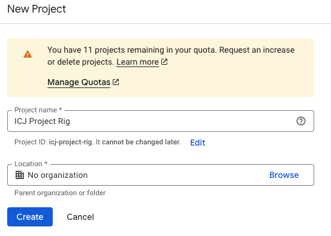
GCloud project Click Create.
This will take a couple of seconds to complete and you’ll be taken to a new screen. As part of that you’ll get a Notification.
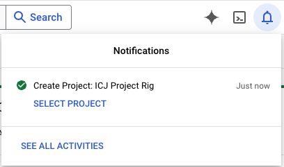
Notifcaiton Click on the SELECT PROJECT link in the notificaiton.
Once you do that, you should see the project listed next to the Google Cloud logo.
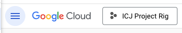
Project selected
3.6 Enable APIs
Scroll down the page to find the Getting Started panel, then find Explore and enable APIs and click on it.
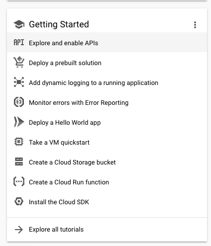
Find APIs You’ll be taken to a new page that wil have a blue-bordered button ENABLE APIS AND SERVICES. Click it.
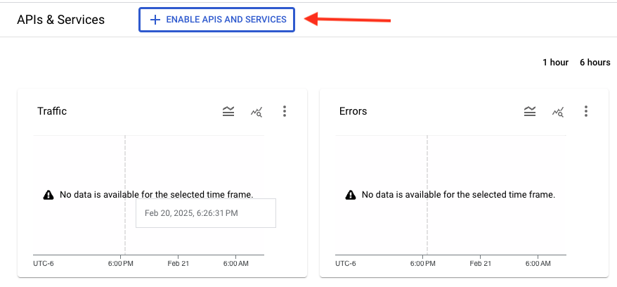
API button You’ll be taken to yet a new page with a search bar. Type in “Google Drive” and search. In the search return, among the top results should be Google Drive API, which is what we want. (We don’t need the “Activity” version.)
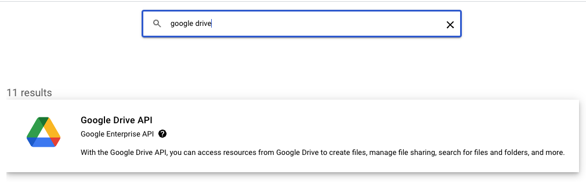
Drive API Click on the Google Drive API result.
Then click the blue ENABLE button.
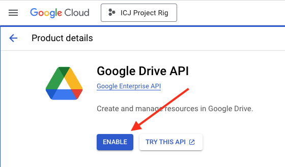
Enable API You’ll be taken to a new page, but the API is now enabled. Click on the Enable APIs & services link on the left navigation.
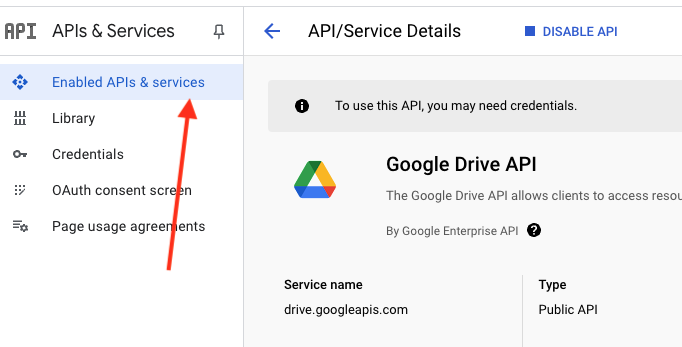
Back to APIs
3.6.1 Repeat for other APIs
Now you need to Click on the blue-bordered +ENABLE APIS AND SERVICES button again and go through the same steps to search for and enable two more APIs:
- Google Docs API
- Google Sheets API
3.7 Adding a service account
A “service account” is a credential that allows you to interact with the APIs we just enabled.
Go to the search bar and type in service account. As you type, you should see the Service Accounts tool show up. Click on it.
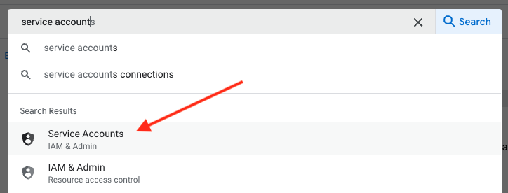
Service search Next you want to click on the + CREATE SERVICE ACCOUNT linke.
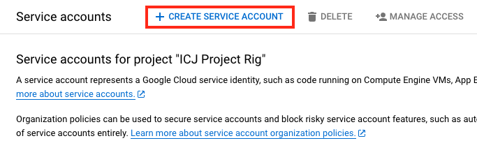
Create Service Account Fill out the fields as follows:
- Service account name: icj-user
- Service account id (this should get filled out automatically): icj-user
- Service account description: ICJ Final Project
Click Create and continue to make the account.
Click Done. Once that is created, you are taken to another screen.
Click on the service account link name.
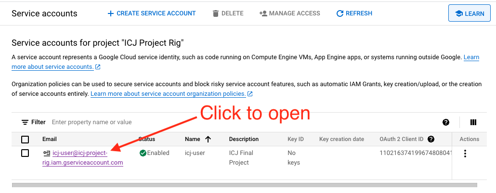
Open service account
3.8 Create service account key
Now that you have the service account, we need to create a key for it. This is the credential that will allow us to access these APIs from our code.
Click on the Key tab.
Under the ADD KEY button, choose Create new key.

Create key And then you get a window to choose the file format. Choose JSON.
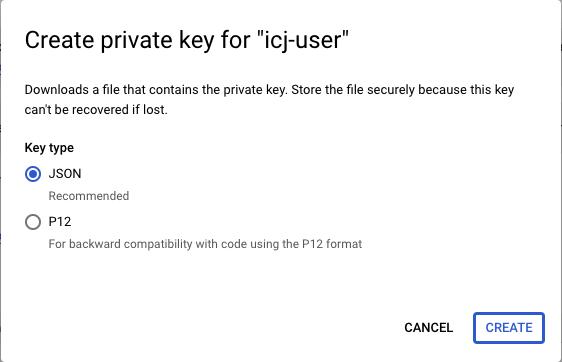
Pick JSON A file gets created and it should save automatically do your Downloads folder. It’s called something like icj-project-rig-8cbb102dgaf8.json.
3.9 Add key to Codespaces
NOTE: It is absolutely imperative that you DO NOT commit the contents of
service_account_key.jsonas a file in a project. If someone else were able to see the contents of that file, they could execute any action that service account has in its abilities. Sinceservice_account_key.jsonis in the.gitignorefile, you should not be able to check it in, but it is important to remember that for the sake of transparency.
Our aim now is to save the contents of that downloaded file into Github, and then to share it with repos that need it.
In a browser logged into Github, go to https://github.com/settings/codespaces.
Under Secrets it probably says there are no secrets and a button for New secret. Use that to create a New secret.
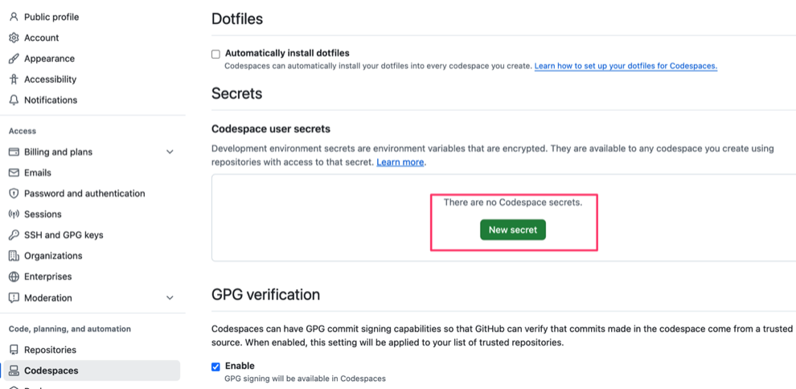
New key For the Name, use exactly this:
SERVICE_ACCOUNT_CREDENTIALSFor the value, you want to paste in the content of the downloaded
.jsonfile from the last step. So, you’ll want to use Visual Studio Code on your computer to open that file from your Downloads folder and copy/paste the entire contents into the value field.Under Select repositories, you want to choose use the dropdown to search for and click the checkmark for your project repo that needs this secret.
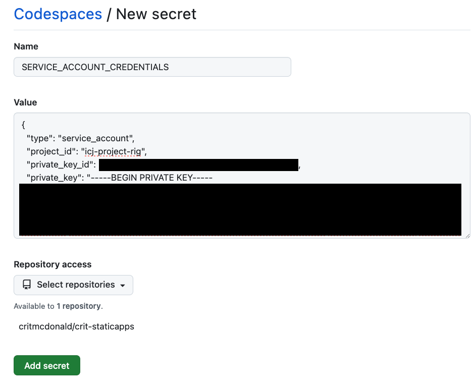
Key crendtials
If you create different repos later that need this same Codespace secret, you can come back to here, edit the existing key and add the repo.
3.10 Test the credential
Now you’ll want to go back to the codespace for your project and test that you completed your access.
Launch the codespace where you want to test the credential.
In the Terminal, run:
echo $SERVICE_ACCOUNT_CREDENTIALSIn return, you should get some JSON that starts with
"type": "service_account"
If you using the icj-project-rig, you should try to download the connected Google Sheet and Google Docs data, which is why we did all this!
gulp fetchYou’ll should get a return that says you downloaded library and bookstores:
[12:34:05] Starting 'fetch'...
[12:34:05] Finished 'fetch' after 1.96 ms
Downloaded `library` (1RgMhjtkXlbbf9uzSzy_xPRKwxcVZIZqVytgM_JoU4E4)
Downloaded `bookstores` (1gDwO-32cgpBDn_0niV0iu6TqQTaRDr4nmSqnT53magY)